除了口红，还有什么能让我看起来特别又好看？
化妆师MK-雷韵祺 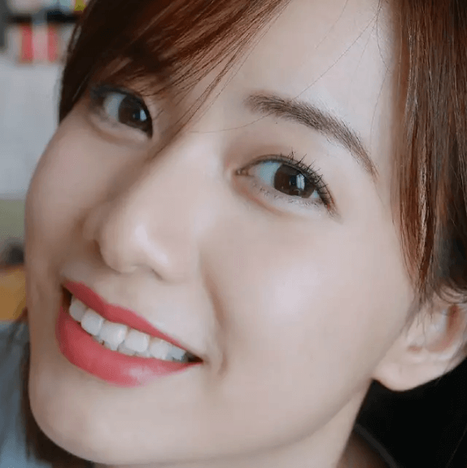
hello，晚上好，我是MK呀呀~
作为一名美妆博主，整天的日常当然离不开各种各样的彩妆品，也要不断学习化妆这门艺术。在众多彩妆中，口红作为提升气色的必备佳品，不少妹子都痴迷，包括我。
喜欢口红的理由千千万，比如可以提气色啦，换个唇妆也可以很妖艳。
但是要说最能体现一个人的性格和特点的元素，我还是投眼妆一票，毕竟大家都说“眼睛是心灵”的窗户嘛！而且经常就是换个眼妆换个人，比如本MK~
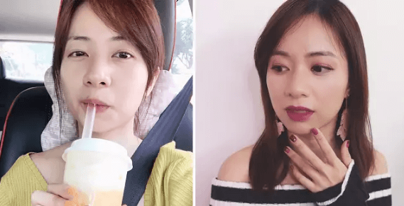不信？我们来做个小游戏。下面这三双眼睛呢，是我从三位女明星中截出来的局部图片，先考考你们是不是能只根据眼睛就猜出谁是谁？
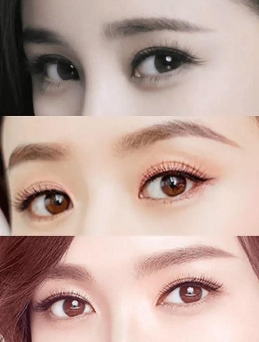啦啦啦，答案揭晓，从上到下分别是大幂幂、赵丽颖和唐嫣。为什么这么快就猜对？当然是因为她们的眉眼都有自己很明显的特点啦。
大幂幂的眼睛就不用多说啦，可以说是五官里面最加分的部分，黑眼球亮而有神，双眼皮虽然不是欧式大双但小扇形很有味道，再加上专看着有种“小狐狸”般的活泼感。
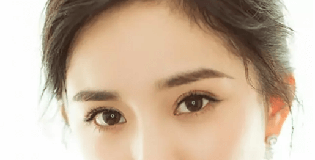而赵丽颖的眼睛就是明显的圆圆小鹿眼，搭配小圆脸更显甜美。为了平衡整体给人“圆”的感觉，所以她喜欢在眼尾将眼线拉长。但是依旧少不了的还是长睫毛，blingbling~
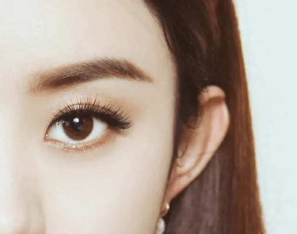最近荣升为Bally亚太地区代言人的糖糖呢，额头相对来说比较宽，所以她的眉毛通常选择拉长版的一字眉在平衡。眉眼较平，所以浓密的睫毛和浓黑眼线是出席正式场合的不二法宝。
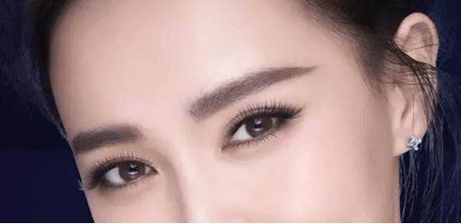只通过眉眼局部就能辨认出一个人，这充分说明每个人的眉眼都有各自的特性，而眉眼妆容有特点的人也更容易被人记住。
眼妆千千万，但就亚洲女星来说，夏日娃娃眼妆一直都备受宠爱，它的要点是：或纤长或浓密的睫毛、自然的眼线以及有个人特色的眉妆。
下面MK演示一遍娃娃眼妆怎么画，大家要仔细看哦~
夏天首选的娃娃眼妆当然就是日常感的清透妆啦，看似简单实则有许多需要注意的地方。
Step1：先选一个接近肤色但稍微深一点颜色的眼影给眼部做打底，可以让眼睛显得没那么肿。
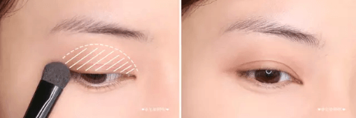Step2：然后就是画一条干净利落的内眼线，这部分选择眼线笔更适合新手宝宝一点。
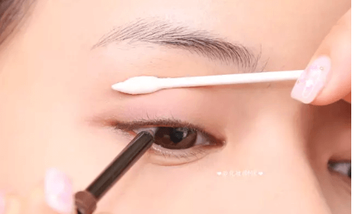Step3：终于来到重点的睫毛膏部分啦，日常妆容可以选择纤长型的睫毛膏，自然的电眼娃娃。
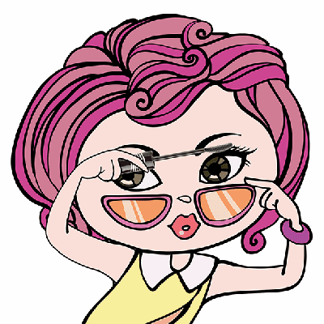这次我用的是玫琳凯臻爱纤盈特长睫毛膏，主打就是自然纤长，刷头比较纤细而且不容易刷出苍蝇腿。
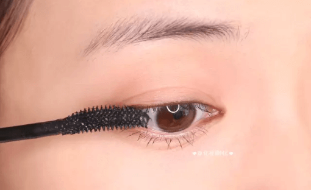只需要一层，睫毛的确会变长，而且时间久也不会塌下来，这点太重要了！/(ㄒoㄒ)/~~
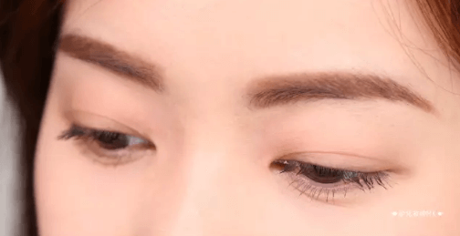 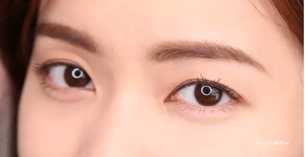Step4：最后一步只需要根据自己的眉形简单勾勒一下眉毛就好啦，像我自己的眉毛是有点弧度的一字眉，画完之后再用眉刷晕染一下就好。
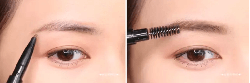这样一个简单的日常小心机的电眼娃娃妆就完成啦，我自己还是挺满意的，眼妆简单又好上手！
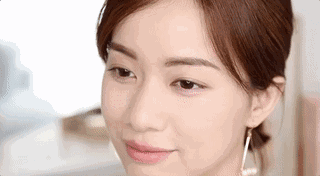关注MK的美娃娃都知道，MK其实并不很适合照搬欧美的烟熏妆，直接照搬的后果就是显得眼妆很脏。为了应对这个问题，在派对妆这一块，我也可以说是颇有研究。
我觉得对于像我这样子的女生来说，电眼娃娃妆的重点就是晕染自然的眼影+干净利落的眼线+浓密防水的睫毛膏。
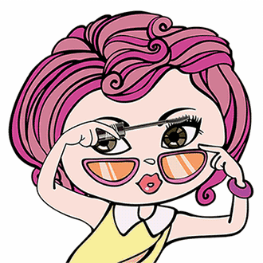下面MK一步一步演示给你们看呀~
Step1：电眼娃娃妆的眼妆部分很重要，眼影方面我选择了紫色晕染眼窝部分，然后用深棕色加深眼尾三角区域，这样可以使得眼神更加深邃。
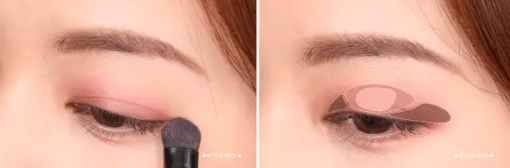Step2：接下来就是眼线啦，和日常妆很自然的内眼线不同，电眼娃娃妆的眼线眼尾的拉长很重要。
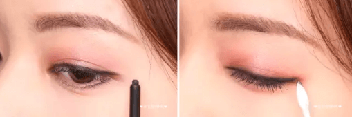效果就是这样子的，妆感比较明显但又不会显得很脏。
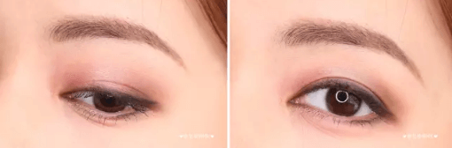Step3：但是还不够，为了更加凸显”电眼“，我会选择防水型的浓密睫毛膏刷1~2次。
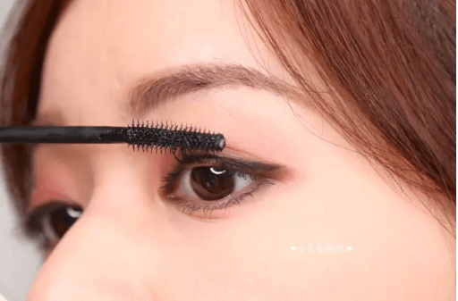这次用的产品是玫琳凯的臻爱纤盈滋养睫毛膏，具有防水功效，最适合这种派对妆啦。我自己用的话感觉这款和上面的纤长型还是蛮不同的，睫毛明显更浓黑了。
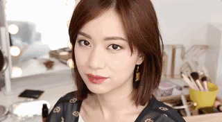Step4：再画一个艳丽的复古大红唇，派对妆的要点就有了！这个方法亲测适用于和MK一样的娇小妹砸~

因为每次妆容之后总是会有美宝宝在后台问MK我都用了什么产品，所以这次索性直接列举出来。
提前说明，MK觉得一个好的眼妆重点就在于睫毛膏和眼线，而它们是否防水、持久性如何更是重中之重。有了好的产品，你会发现如虎添翼，画眼妆再也不是难事。
刷头是比较精细的设计，MK很喜欢这种样式的刷头，因为不容易画出苍蝇腿呀~
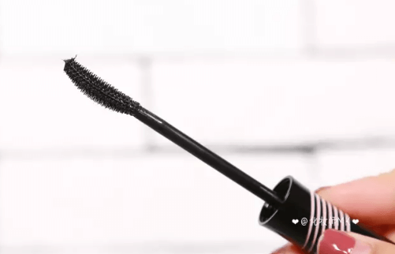而且附着在上面的液体很均匀，刷睫毛的时候不会一卡一卡不流畅。
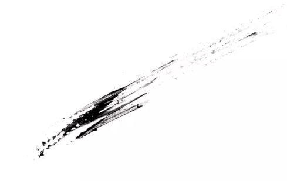当然，作为一只睫毛膏，大家最关心的就是效果啦。为了给大家对比效果，MK找了几乎是单眼皮的小助手，她其实是有一点内双的，但无奈睁开眼睛就没有了。
她第一次使用之后反馈说这支睫毛膏对于她这种肿单效果也很明显，也是很不容易（默默心疼你们~）
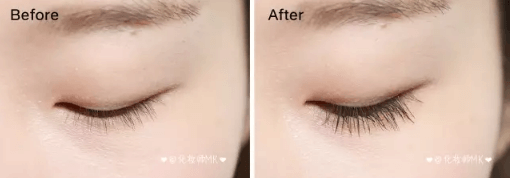好的睫毛膏应该还具有一定的防水性，否则出出汗就没了那还得了？待睫毛膏干了之后，我们向小助手涂睫毛膏的部位泼了一杯水，然后发现睫毛膏并没有晕染开来，也没有出现“熊猫眼”。
使劲眨呀眨，依旧没事，所以防水性能还是很不错的，像小助手一样的内双妹子可以不用担心啦~
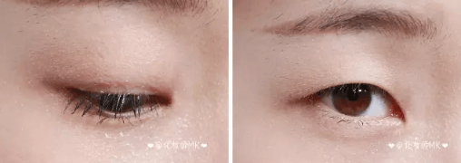这款眼线笔一共出了3种颜色：黑色、棕色和蓝色，MK自己用的是黑色，喜欢自然妆感的美宝宝可以选择棕色。至于蓝色，适合盛装出席Party的妹子们。
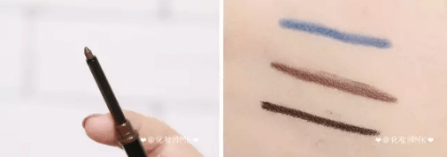这支眼线笔的笔头是比较细的圆形，这种粗细程度相对来讲还是很容易上手的，画内眼线的时候也不容易戳到自己。
质地中等偏软，所以显色度很棒，基本一遍的上色度就够了。
直接用水冲刷一遍，发现基本可以保持98%的完整性，所以大家还是可以放心的。
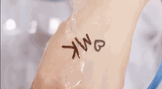卸妆的话用眼唇卸妆液基本擦2遍就可以卸干净了，再一次强调，对于眼部卸妆大家还是要多多重视哦~
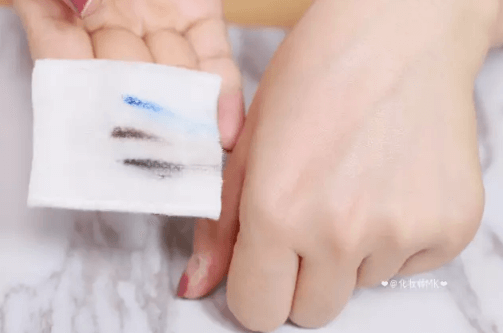眉妆作为很多女生初入彩妆坑的第一个项目，可以说简单也可以说不简单，需要找准自己的眉型！而除此之外，一支可以方便随身携带的眉笔也是很重要哒。
玫琳凯这支眉笔是双头型的，一边是眉笔，一边是眉刷，直接上色之后就可以顺便晕染，方便快捷，省了再带小工具的烦恼。
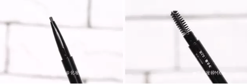根据亚洲妹子的使用需求，这款眉笔一共出了2个颜色，一个是灰色系，适合偏黑色头发；另一个是棕色系，适合浅发色的妹子。
质地整体中等，感觉笔触很细腻，上色也比较均匀。笔头设计成了扁圆形，可以快速勾勒眉型。
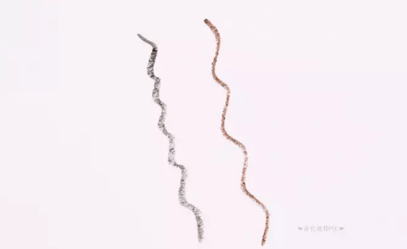下面放小助手的一张试用效果~
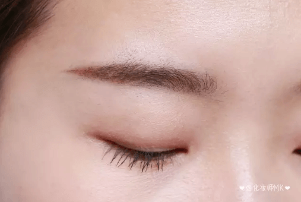MK自己之前没有用过玫琳凯的这套产品，这次用完我觉得效果还是超出了我的期望值，睫毛膏不管是纤长型还是浓密型都很自然的感觉，而且价格不会太贵，整体性价比还是很高的，喜欢多尝试的美宝宝可以试试呢~
好啦，其实不管是双眼皮还是单眼皮，不论是大眼睛还是小眼睛，其实每个女生的美都是独一无二的，我们要善于根据自己的特点发掘出属于自己独特的美！